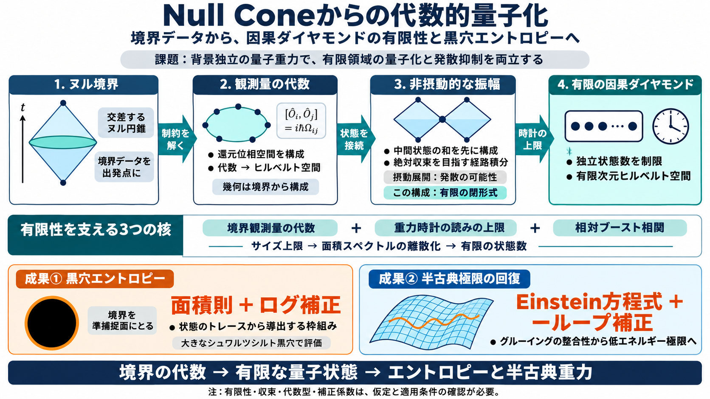

量子ビットの幾何学から重力へ 高柳 匡
51/79 量⼦重⼒理論はグローバル対称性を持たない このブラックホールをホーキング蒸発させる。 ホーキング放射はグローバル対称性の電荷を運ばない。 ⇒グローバル対称性の表現は保たれる。 ついには、ブラックホールのエントロピーから期待される…

背景独立・有限境界
交差するヌル円錐の「境界データ」から、制約を解き、観測量の代数を立て、因果ダイヤモンドの有限性と黒穴エントロピー（ログ補正）へ到達する枠組み。
有限性が要る
通常の量子重力は（しばしば）古典時空を背景として摂動しがちだが、背景独立のまま有限領域の量子化と発散抑制を両立する必要がある。
ヌル円錐で制約
第一階（tetrad / spin connection）とBF型のシンプリシティ条件から出発し、交差するヌル円錐で重力の null constraints を解いて還元位相空間を得る。
代数が先
還元作用の変形を「観測量の挿入」とみなし、境界観測量のアルジェブラ（関係構造）を先に作ることで、表示（ヒルベルト空間）へ進む。
和の順序
ルーイング（状態の接続）で時空遷移の振幅を組み立てるとき、各中間状態の和が有限（絶対収束）になるようにローレンツ経路積分が構成される。
三つの核
因果ダイヤモンドの有限次元ヒルベルト空間は、「ヌル境界の代数」と「時計読みによる制約」と「相対ブースト相関」の組で導かれる。
面積が離散
上限サイズの固定により、面積演算子のスペクトルが離散化し、因果ダイヤモンドの状態数が有限へ落ちることを境界ブースト相関から比較する。
準捕捉面
邊縁を marginally trapped surface（準捕捉面） にとると、トレースから Bekenstein–Hawking 項とログ補正が（形として）導かれる。
低エネルギー極限
準古典極限では、重ね合わせ整合性（グルーイング）を通じて一ループの補正を含む形で、低エネルギー極限の半古典アインシュタイン方程式が回復する。
型の違い
von Neumann 代数の分類（type）として、JT重力類似の議論では type I∞ 的な状況も触れられ、4次元ではシアが時計読みに影響し型の性質が変わる、とされる。
長い論理線
「ヌル円錐の代数 → 表示 → 振幅（経路積分） → グルーイング有限性 → 因果ダイヤモンド有限次元 → 面積則とログ補正 → 半古典方程式」を一連の構成として狙う。
確認すべき鍵
要約だけでは確定できない点を、本文で優先的に確認するためのチェックリスト（仮定・定義域・収束・代数型・ログ係数の厳密性）。
51/79 量⼦重⼒理論はグローバル対称性を持たない このブラックホールをホーキング蒸発させる。 ホーキング放射はグローバル対称性の電荷を運ばない。 ⇒グローバル対称性の表現は保たれる。 ついには、ブラックホールのエントロピーから期待される…
Area(Horiz 4 3 N B BH G c k S ABH ⇒ブラックホールの熱力学 （温度も持つ） ブラックホールのエントロピー公式の驚き （１）エントロピーが体積ではなく、面積に比例！ ⇒重力理論の自由度は面…
of a CoS and PFDM. Section 3 discusses the black hole’s thermodynamic properties, highlighting the effects of the string…
# Venkatesa Chandrasekaran Headline: Manager Infrastructure Projects at Emirates Bank Current role: Manager Infrastruct…
S. Kapoor, D. Jaganathan, and R. Govindarajan, Trap- ping and extreme clustering of finitely dense inertial particles ne…